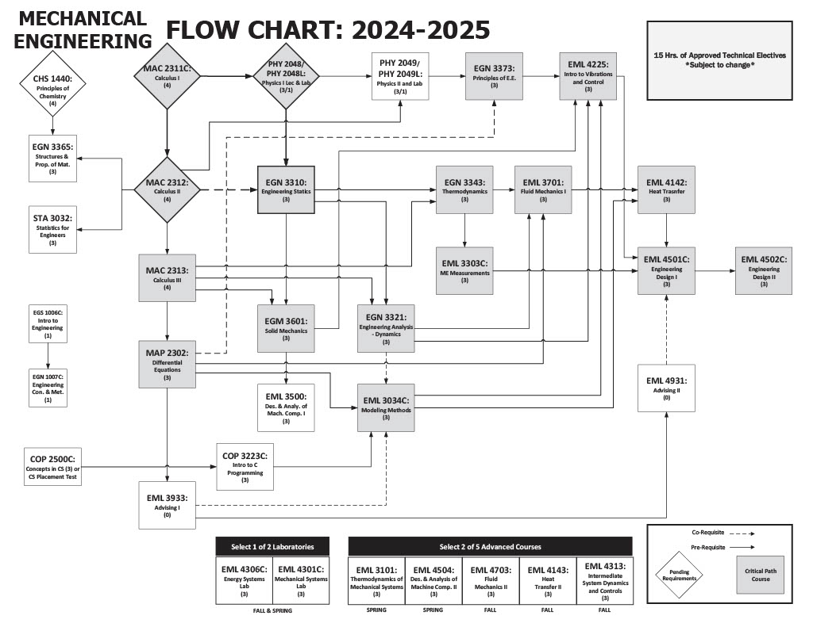

About the Major
The Mechanical Engineering major at UCF provides students with a strong foundation in engineering principles, mathematics, and physics, preparing them for careers in industries like aerospace, automotive, and energy. The program emphasizes hands-on experience through labs, senior design projects, and research opportunities in areas such as robotics, thermal systems, and materials science.
Students can specialize in areas like energy systems or bioengineering while benefiting from UCF’s partnerships with major companies like Lockheed Martin and Siemens. With access to state-of-the-art facilities and a curriculum focused on innovation, graduates are well-equipped for both industry roles and advanced studies.
Program Flowchart

Major-Specific Classes
Class 1: EGN 3343 - Thermodynamics
This course deals with energy, heat, and work, and can be challenging due to the abstract conepts and complex calculations involved.
Class 2: EML 3701 - Fluid Mechanics I
This course focuses on the behavior of fluids (liquids and gases) and can be difficult due to the mathematical modeling and problem-solving required.
Class 3: EGN 3321 - Dynamics
This course builds upon statics and explores the motion of objects, requiring a strong understanding of calculus and physics principles.
Online Resources |
Campus Resources |